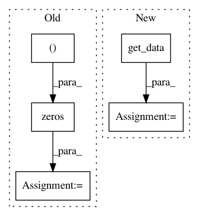

b125873cb6e0fa9f99137b256ac5fc602e4b72f1,dipy/denoise/tests/test_nlmeans.py,,test_nlmeans,#,9
Before Change
assert_raises(ValueError, nlmeans_3d, A, sigma=5)
A = 100 + np.zeros((50, 50, 50)) //+ 5 * np.random.rand(50, 50, 50)
B = nlmeans_3d(A, sigma=1)//np.std(A))
After Change
import nibabel as nib
vol = nib.load("t1.nii.gz")
data = vol.get_data()[:, :, :, 0].astype("float64")
aff = vol.get_affine()
hdr = vol.get_header()
print("vol size", data.shape)
In pattern: SUPERPATTERN
Frequency: 3
Non-data size: 5
Instances
Project Name: nipy/dipy
Commit Name: b125873cb6e0fa9f99137b256ac5fc602e4b72f1
Time: 2014-01-17
Author: Samuel.St-Jean@usherbrooke.ca
File Name: dipy/denoise/tests/test_nlmeans.py
Class Name:
Method Name: test_nlmeans
Project Name: nipy/dipy
Commit Name: 17bc2c942f495d5807cf6ced486de9ec05767ab9
Time: 2013-09-23
Author: girard.gabriel@gmail.com
File Name: dipy/reconst/tests/test_odf.py
Class Name:
Method Name: test_peaksFromModelParallel
Project Name: nilearn/nilearn
Commit Name: d3d91cb4d27ff6826d755f0377b54ea999105490
Time: 2012-09-18
Author: gael.varoquaux@normalesup.org
File Name: plot_ica_resting_state.py
Class Name:
Method Name: